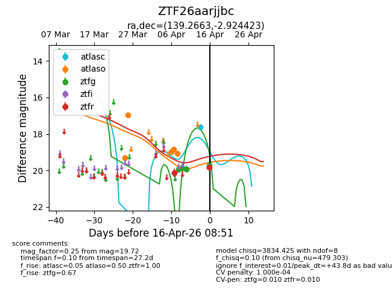
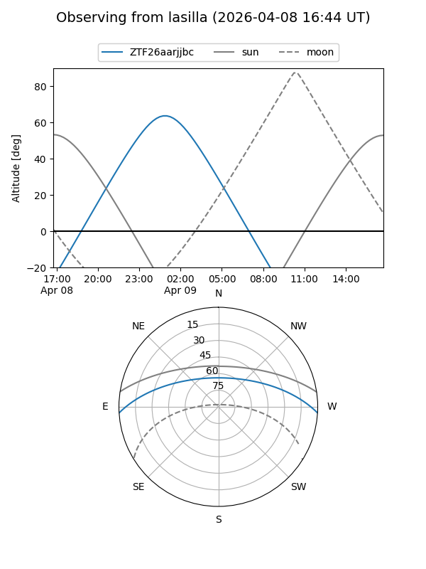
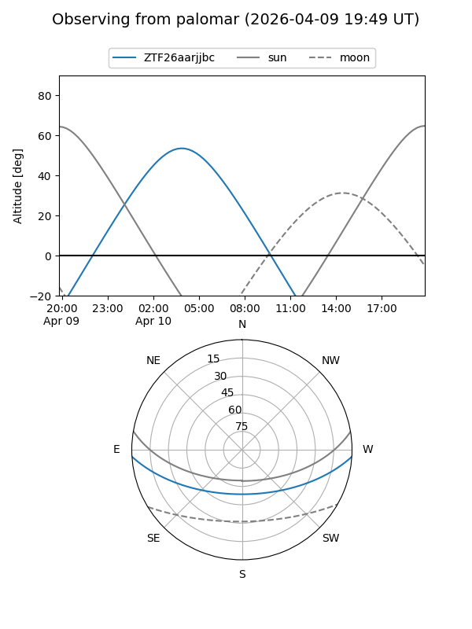
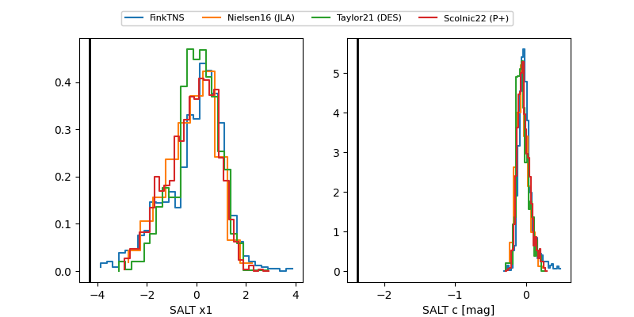

ZTF26aarjjbc
Target ZTF26aarjjbc at 2026-04-16 08:59
Aliases and brokers:
FINK: link
Lasair: link
ALeRCE: link
alt names
ZTF26aarjjbc (ztf,fink_ztf)
Coordinates:
equatorial (ra, dec) = 139.2663,-2.92442
equatorial (HMS+DMS) = 09:17:03.91,-02:55:27.92
galactic (l, b) = (234.3746,+30.28285)
Flags:
likely cv
Photometry:
last atlasc=17.63, atlaso=19.08, ztfg=19.72, ztfr=19.82
2 atlasc, 5 atlaso, 4 ztfg, 2 ztfr detections
Lightcurve

Visibility


Additional plots
